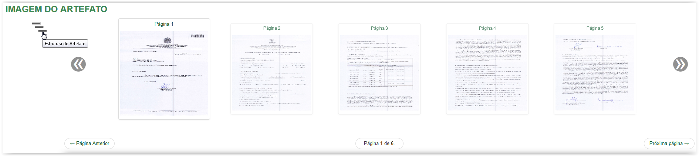
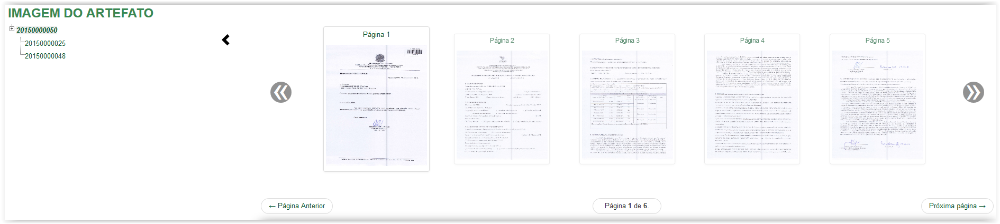
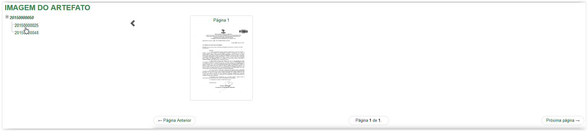
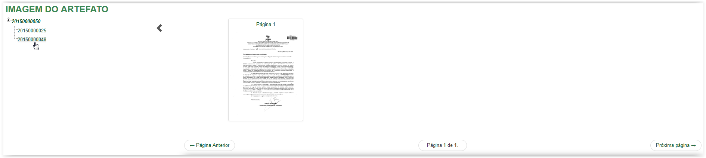
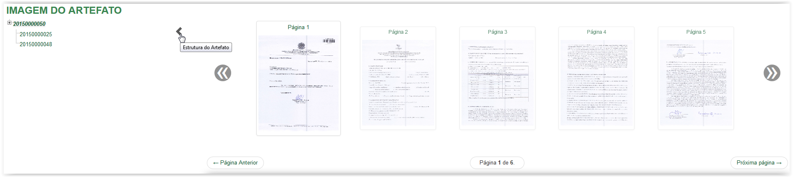

Visualizar imagem
Para visualizar a Árvore de Vínculos, clique na figura disponível ao lado esquerdo da tela:

Clicando na figura para visualizar a Árvore de Vínculos
O sistema apresenta a Árvore de Vínculos do artefato:

Apresentando a Árvore de Vínculos
É possível visualizar a imagem dos artefatos que compõem a Árvore de Vínculos. Clique no número de cada artefato para que a imagem possa ser visualizada:

Visualizando a imagem do artefato vinculado

Visualizando a imagem do artefato vinculado
Para fechar a Árvore de Vínculos, clique no ícone apresentado na tela abaixo:

Clicando no ícone para fechar a Árvore de Vínculos
A tela Imagem do Artefato retorna para o seu estado inicial:
Tela Imagem do Artefato
Created with the Personal Edition of HelpNDoc: Free CHM Help documentation generator